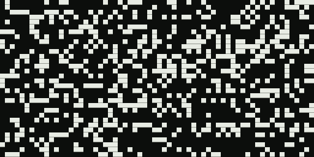

Random Dots
Michael J. Bauer · Electronics Australia (1979), cassette 1K RAM


A small display demo: the screen slowly fills with random dots.
Keys
None: just watch.
Files
| File | Version | Load | Run |
|---|---|---|---|
| Random Dots.c8 | main | 0200-02FF | C000 |
Source
Decoded from Michael Bauer's original cassette recording (dream6800_programs_mp3.zip); instructions from his article in Electronics Australia, July 1979. Author: Michael J. Bauer (CHIP-8 programs partly adapted from the RCA COSMAC VIP manual).
Corrections applied
- None: decoded byte for byte from the original cassette recording (tools/tape2bin.py in the core).
Open doubts
None.